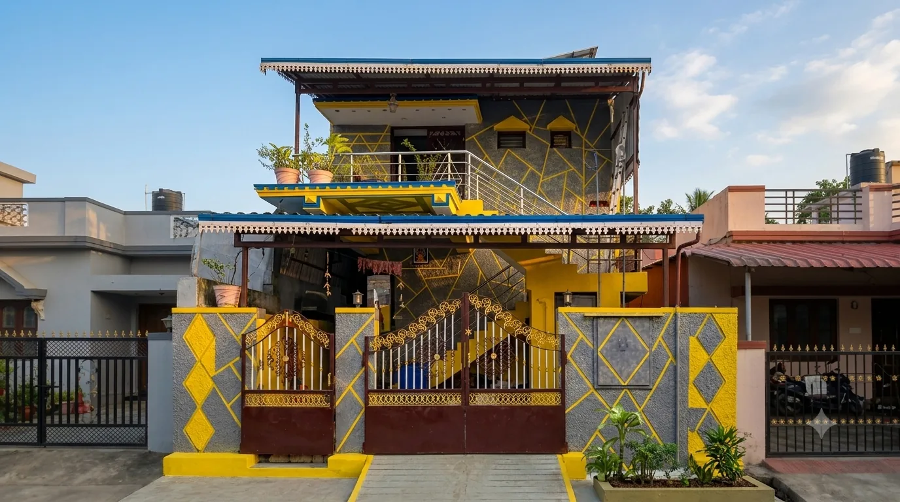

How to Find a Budget Stay Near Isha Yoga Center, Coimbatore

Table of Contents
- Understanding Your Accommodation Options Near Isha
- Key Factors When Evaluating a Budget Stay
- Ashram Dorms vs. City Hotels vs. Local Homestays
- Understanding Pricing & Avoiding Hidden Costs
- Location & Commute: The Semmedu Advantage
- Tips for Families and Group Visitors
- Why Nisha Home Stay is the Trusted Choice
Understanding Your Accommodation Options Near Isha
Every year, hundreds of thousands of spiritual seekers, yoga enthusiasts, and sightseers visit the renowned Isha Yoga Center and the majestic 112-foot Adiyogi Shiva Statue nestled at the foothills of the Velliangiri Mountains outside Coimbatore. For many pilgrims, finding an authentic, comfortable, and truly affordable budget stay near Isha Yoga Center is one of the most critical parts of planning their journey.
Because the yoga center is located approximately 30 km west of central Coimbatore, where you choose to lodge dictates your daily commute, budget, and overall peace of mind. Staying in the city center often forces an expensive 60-to-90 minute taxi ride twice each day, while staying right in the immediate perimeter allows you to attend early morning Dhyanalinga meditations and late evening Divya Darshanam shows without travel stress.
Key Factors When Evaluating a Budget Stay Near Isha Yoga Center
When searching for a budget stay near Isha Yoga Center, price is obviously important, but low room rates shouldn't mean sacrificing cleanliness, safety, or rest. Here are the core factors you must examine before booking:
- Proximity to the Gates: Look for lodging within 2 km of the entrance. This allows you to reach the center in under 10 minutes by auto, car, or scooter.
- Private Attached Bathrooms: After long hours of meditation or exploring the foothills, having a clean, private bathroom with a 24-hour water heater (geyser) is essential.
- Climate Control Flexibility: The foothills experience warm daytime temperatures and cool nights. Look for accommodation offering both AC and Non-AC room tiers so you only pay for what you need.
- Transparent Pricing: Beware of hotels that inflate rates during weekends or festivals. A dependable homestay will maintain transparent daily rates.
- Kitchen & Parking Facilities: Having access to a refrigerator and dining hall is invaluable for families and guests on extended spiritual retreats.
Distance Reality Check
Always verify the exact road distance before confirming your stay. Nisha Home Stay is located at 330/1 NGR Street in Semmedu: Isha Yoga Center is approximately 1.8 km (8 minutes driving), and Adiyogi Shiva Statue is approximately 2.2 km (10 minutes driving). You avoid all city traffic jams entirely.
Ashram Dorms vs. City Hotels vs. Local Homestays
Visitors typically choose between three main categories of accommodation:
| Accommodation Type | Average Daily Cost | Distance to Isha | Privacy & Flexibility |
|---|---|---|---|
| Ashram Dormitories | Budget-friendly | On-site / walking | Shared facilities, fixed timings, advance booking mandatory |
| Coimbatore City Hotels | ₹2,500 – ₹6,000+ | 28 – 35 km (60-90 mins) | High commute costs (₹1,500–₹2,500/day taxi fares) |
| Nisha Home Stay (Semmedu) | From ₹1,500 / 24 hrs | 1.8 km (8 mins) | Private 1BHK units, attached baths, flexible entry, zero commute stress |
Understanding Pricing & Avoiding Hidden Costs
A common trap when booking budget accommodation near Isha Foundation is hidden costs. A distant hotel room advertised for ₹1,200 often ends up costing over ₹4,000 per day once you factor in round-trip auto or cab fares to Semmedu.
At Nisha Home Stay, rates are completely transparent and structured on a 24-hour occupancy basis:
- 1 Guest: ₹1,500 per 24 hours
- 2 Guests: ₹2,000 per 24 hours
- 3 Guests: ₹2,500 per 24 hours
- 4–5 Guests: ₹3,000 per 24 hours
- 6–7 Guests: ₹3,500 per 24 hours
Each unit is a furnished 1BHK home featuring a master bedroom, living hall, private attached bath, and kitchen amenities. Explore our complete rooms and tariff page for detailed room specifications.
Location & Commute: The Semmedu Advantage
Semmedu is the peaceful, green rural village situated right along the Siruvani approach corridor to the Isha Yoga Center. Choosing a homestay near Isha Yoga Center in Semmedu provides substantial practical advantages:
- Convenient Road Access: Reach the main entrance in approximately 8 minutes by road (~1.8 km).
- Local Transport: Autos and town buses (Route 14D and Siruvani services) pass through Semmedu frequently.
- Proximity to Adiyogi: Experience the 7:00 PM Divya Darshanam laser show and return to your peaceful room in just 10 minutes (~2.2 km).
- Trekking & Nature: The sacred Velliangiri Foothills & Trekking Starting Point is approximately 5 km away.
Tips for Families and Group Visitors
Spiritual travel is often shared with family members, including elderly parents or young children. Booking multiple cramped hotel rooms frequently divides the family and spikes overall costs. A 1BHK homestay format gives your family a private living room, dining space, and home-like atmosphere where everyone stays together under one roof.
Why Nisha Home Stay is the Trusted Choice
Nisha Home Stay offers three independent, clean, and fully furnished 1BHK units designed specifically for spiritual visitors, families, and solo pilgrims seeking a budget stay near Isha Yoga Center. We offer:
- Furnished AC and Non-AC room options.
- Clean private attached bathrooms with geyser.
- High-speed Wi-Fi and power backup.
- Refrigerator and light kitchen access.
- Fresh South Indian vegetarian home-cooked meals upon advance request.
- Assistance with local auto arrangements and C-Form support for international pilgrims.